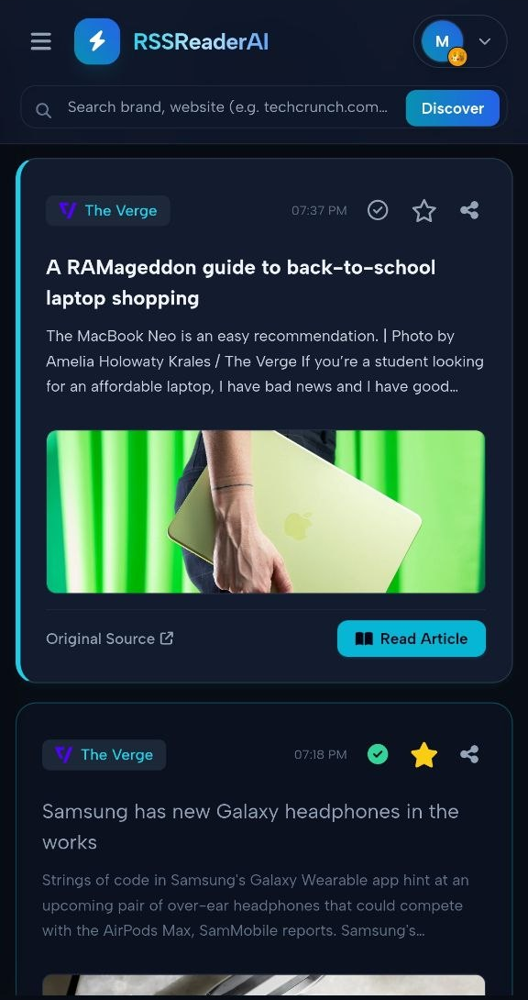

Master Information Overload Today.
Let AI read, summarize, and play your feeds on autopilot. Join the future of content consumption on Web and Telegram.
Transform hundreds of unread articles and newsletters into structured executive summaries and natural voice podcasts. Available on high-speed Web App and real-time Telegram companion.

Skip the endless doomscrolling. Extract high-signal knowledge and listen to audio broadcasts on your own schedule.
Turn your unread feeds into warm, natural AI podcasts. Stream briefings seamlessly on the web app or play voice notes inside Telegram.
Instant 1-sentence takeaways, bulleted executive highlights, or comprehensive deep dives. Powered by ultra-fast neural models.
Discover trending tech, finance, and global news sources with 1-click subscription, or seamlessly import and export your complete OPML collection.
Log in with Google, Email, or Telegram. Link accounts with one tap so your folders, read status, and Pro perks stay 100% synchronized everywhere.
Click play to listen to a live sample synthesized with Edge-TTS (Ava Neural).
No complicated software to configure. Open the modern Web App in your favorite browser or connect directly through Telegram in under 10 seconds.
One-click sign in with Google, Email OTP, or Telegram deep-link.
Search curated topics, paste custom RSS links, or import your entire Feedly/Inoreader OPML archive.
Get clean, distraction-free reading, instant key highlights, and customized daily audio podcasts.
[AUTH] User session verified (Sorouri / Pro Tier).
[SYNC] Polling 38 active feeds across 5 folders...
[DISCOVERY] Catalog crawled 12 new high-signal articles.
[AI_CORE] Generating executive bullet briefing...
[AI_CORE] Synthesis completed in 0.8s.
[EDGE_TTS] Neural voice compiled: daily_digest.mp3
[DISPATCH] Available on app.rssreaderai.com & Telegram!
Traditional RSS feeds overwhelm your brain with hundreds of raw links. We extract pure signal and deliver executive intelligence.
Get started for free or unlock unlimited AI summarization, neural podcasts, and fast sync across all devices.
100% Free Forever
🔥 Save ~13% on subscription
💎 Save ~33% - Long-term Access
Everything you need to know about RSS Reader AI ecosystem.
RSS Reader AI is an intelligent, cross-platform reader accessible via a high-performance Web App and interactive Telegram bot. It converts blogs, RSS/Atom feeds, and newsletters into concise AI executive summaries and natural voice podcasts.
Yes! You can link your Google/Email account with your Telegram profile inside the Connected Accounts settings. Your subscriptions, folders, read states, and Pro membership are 100% unified in real-time across both platforms.
You can paste any custom RSS/Atom URL directly, use our curated discovery engine to subscribe with 1-click, or upload an OPML file exported from Feedly, Inoreader, or any other RSS app to import all your feeds instantly.
Our backend runs neural Edge-TTS voice generation. Whenever you generate a digest or single article summary, it converts the text into a human-like voice briefing that you can stream directly on the web app or play inside Telegram.
We support Credit & Debit Cards (Visa, Mastercard, Apple Pay, Google Pay), over 100+ Cryptocurrencies (USDT, TON, Bitcoin, Ethereum), and native Telegram Stars for instant 1-tap in-app upgrades.
Let AI read, summarize, and play your feeds on autopilot. Join the future of content consumption on Web and Telegram.